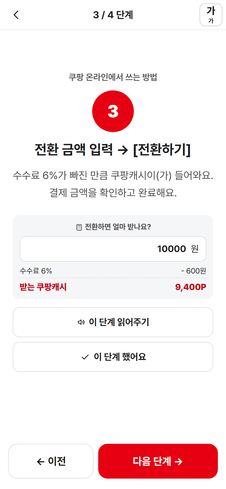
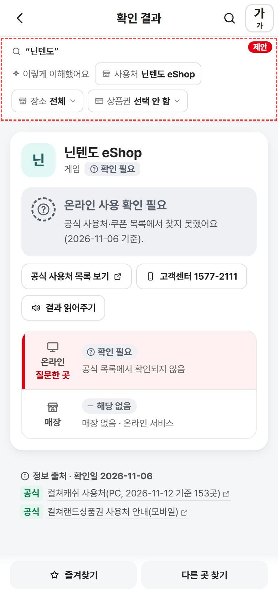
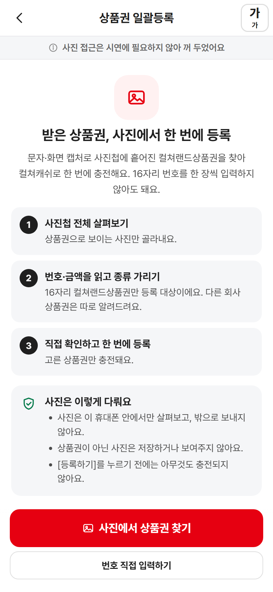

Y-AI 메이커톤 2026 · 컬쳐랜드 사전 미션
컬쳐랜드 써봄
SSEOBOM
상품권, 어디서 어떻게 쓸까?
어디서 쓸 수 있는지 묻고, 그 자리에서 쓰는 법까지.
사용처 확인과 사용 안내를 하나로 잇는 상품권 이용정보 서비스


Y-AI 메이커톤 2026 · 컬쳐랜드 사전 미션
SSEOBOM
상품권, 어디서 어떻게 쓸까?
어디서 쓸 수 있는지 묻고, 그 자리에서 쓰는 법까지.
사용처 확인과 사용 안내를 하나로 잇는 상품권 이용정보 서비스
이런 순간

편의점 계산대 앞에서
이 상품권, 여기서 쓸 수 있어요?
매장에서 되는 곳은 28곳. 충전을 해야 하는지도 헷갈립니다.
쇼핑몰 결제창 앞에서
결제수단에 컬쳐캐쉬가 없는데요?
포인트로 바꾸면 쓸 수 있지만, 수수료와 한도를 알기 어렵습니다.
선물로 받은 날
문화상품권인데 왜 충전이 안 되죠?
이름이 비슷하지만 다른 회사가 발행한 상품권입니다.
답은 이미 있습니다. 다만 여러 곳에 흩어져 있습니다.
상황 ① 매장 계산대에서 지금 바로 쓰고 싶을 때
1앱 홈에서 묻기잔액 카드 위 검색바
2매장에서 바로 가능편의점 4사로 이해 · 공식 출처

33단계 안내충전 없이 문자 바코드로

4바코드 보여주기받은 문자 그대로 계산대에
상황 ② 결제창에 컬쳐캐쉬가 없는 곳에서 쓰고 싶을 때


‘안 돼요’로 끝내지 않습니다1만원 → 9,400원
상황 ③ 쓸 수 없거나, 확인되지 않을 때

충전 불가다른 회사 상품권 — “지류 상품권 충전되나요?”충전 종료일과 이유, 발행사 문의처를 안내

확인 필요공식 목록에 없는 곳 — “닌텐도”추측하지 않고, 공식 목록과 고객센터 버튼을 제시
결과 없음찾지 못한 곳 — “배달의민족”비슷한 이름, 분야로 찾기, 추가 요청으로 연결
연결 ② 받은 상품권이 사진첩에 흩어져 있을 때


제안하는 안전장치 — 사진은 기기 안에서만 분석, 번호는 앞뒤 4자리만 표시, 누르기 전에는 충전하지 않음. 시제품은 예시 사진첩으로 흐름만 보여줍니다.
누구라도

왼쪽은 글자 크게 + 고대비 화면, 오른쪽은 같은 화면을 저시력 관점(흐림)으로 본 모습